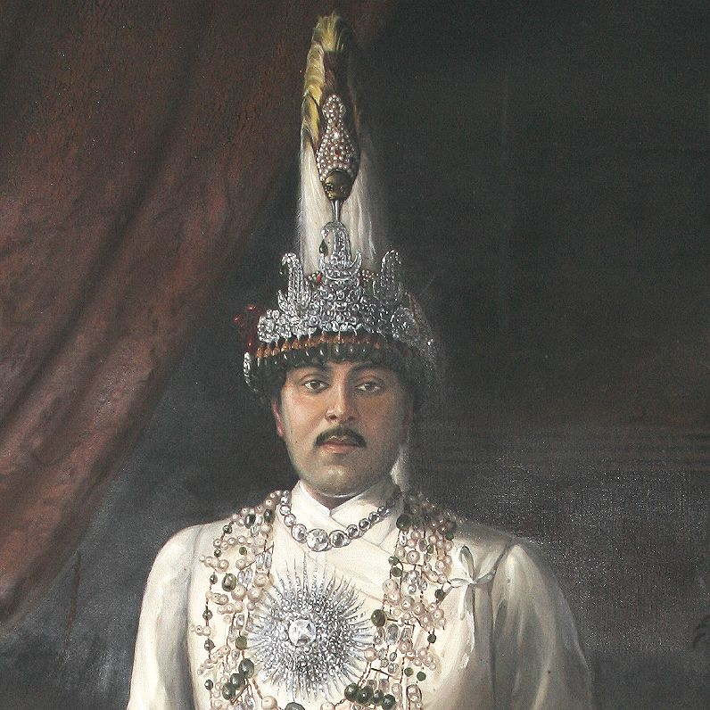

Tribhuwan Bir Bikram Shah Dev
Biography:
Tribhuwan Bir Bikram Shah Dev was born on 18 August, 1875 in Basantapur, Nepal.
He was the son of Prithvi Bir Bikram Shah Dev and Divyeshwari Lakshmi Devi Shah.
He was the eighth King of Kingdom of Nepal from 12 December, 1911 to 13 March, 1955.
He died at the age of 48 on 13 March, 1955 in Canton Hospital, Zürich, Switzerland.